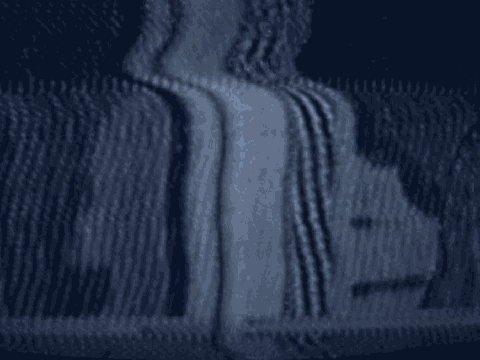

1 issues raised by the Odeh subpoenas.
2 Okay, let's bring in the jury.
3 (Pause)
4 THE COURT: I said Odeh's subpoenas and I meant
5 Al-'Owhali's.
6 (Jury present)
7 PETER JAMES WILLIAMS, Recalled
8 THE COURT: I understand the government wishes to
9 recall Detective Williams?
10 MR. KARAS: Yes, your Honor.
11 THE COURT: Mr. Williams, I remind you you are still
12 under oath.
13 THE WITNESS: Yes, sir.
14 DIRECT EXAMINATION
15 BY MR. KARAS:
16 Q. Good afternoon, sir.
17 A. Good afternoon.
18 Q. I'm going to approach with what have been premarked for
19 identification in handwriting Government Exhibit 1532-I.D. and
20 then Exhibits 1532, 1533, 1534, 1535 and 1536.
21 With respect to 1532-I.D., can you tell us what that
22 is?
23 A. Yes, sir. It's a brown leather briefcase containing
24 personal papers, two Egyptian passports, an address book,
25 flight tickets.
3477
1 Q. And where were those items seized?
2 A. They were seized on top of a wardrobe in one of the
3 downstairs bedrooms.
4 Q. And this is in Mr. Eidarous's house?
5 A. It is, yes, sir.
6 Q. 38 Waldo Road?
7 A. Yes, sir.
8 Q. And how is it you recognize 1532-I.D.?
9 A. I recognize it by my exhibit number PJW/20, my
10 handwriting, and my signature.
1